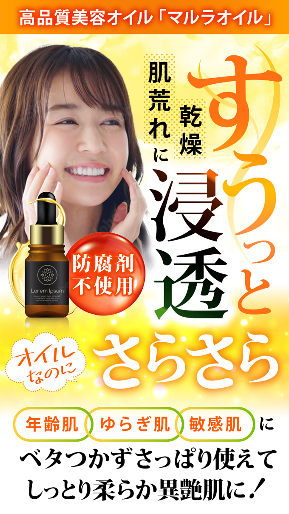
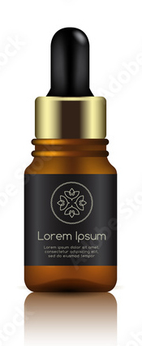
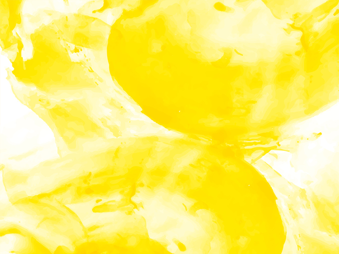
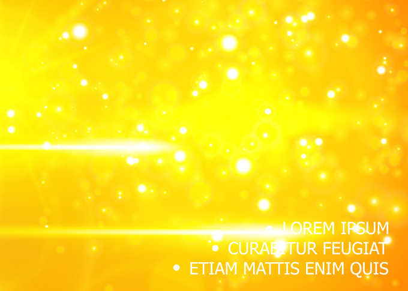
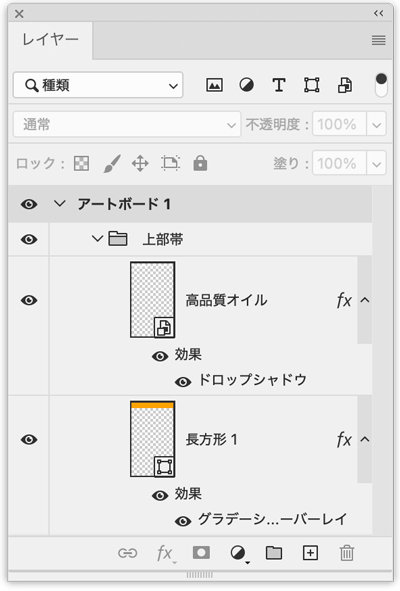
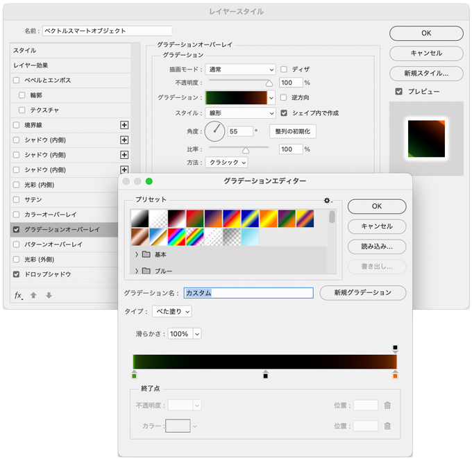
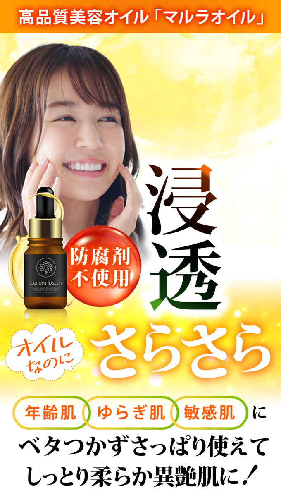
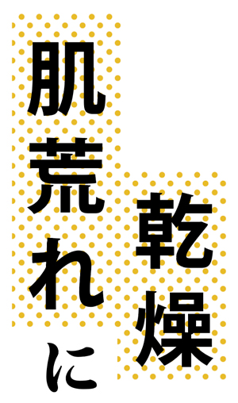

美容系通販 - 浸透
- この動画は、印刷物を前提に解説しています
- 今回は、Photoshopで完成させます（文字等は、Illustratorからのスマートオブジェクト）
完成例

素材の準備



テキスト
- 適宜入力しながら加工します

写真切り抜き
- 「オブジェクト選択ツール」で「被写体を選択」
- 「レイヤーマスクを追加」
上部の帯
- シェイプツールで「長方形」を作成
- 「グラデーションオーバレイ」で、グラデーションを設定
- 文字に対して「ドロップシャドウ」を設定

背景画像配置
- 上部と下部の画像を配置し、レイヤーマスクでぼかす
文字と吹き出しを追加
- 吹き出しのドットは、Illustratorの線種で設定
- 「さらさら」に、Photoshopでドロップシャドウを設定
メインコピー
- 「グラデーションオーバレイ」を設定
 
「すうっと」
- 曲線は「ペンツール」で描画後、「グラデーション」設定
- Illustratorで「オブジェクト」→「クロスと重なり」で輪が繋がっているようにします
サブコピー
- Illustratorで「パターン」を作成して適用

完成
- 位置を微調整して完成
- 「枠線」を追加した場合